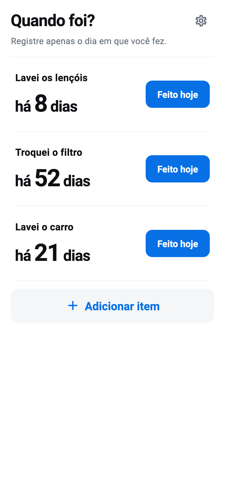

Dê um nome
Adicione uma tarefa de limpeza, troca ou cuidado apenas com um nome.
Quando foi? · iOS / Android
Registre limpeza, trocas e cuidados. Veja quantos dias se passaram.
Veja como funcionaEm preparação

COMO FUNCIONA
Adicione uma tarefa de limpeza, troca ou cuidado apenas com um nome.
Feito hoje salva na hora. Se tocar por engano, desfaça imediatamente.
Veja os dias na tela inicial. Abra um item para ver histórico e intervalo médio.
SÓ O ESSENCIAL
Sem lembretes ou prazos recomendados. As médias vêm dos seus próprios registros.
Itens e histórico ficam no aparelho. O registro funciona offline; anúncios usam internet.
Backups do sistema podem incluir dados do app, mas a recuperação não é garantida.
Leia a política de privacidade →